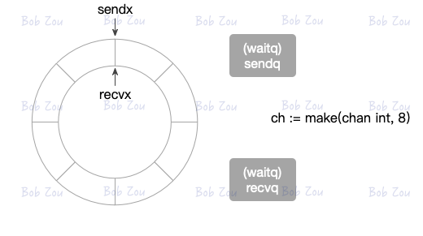
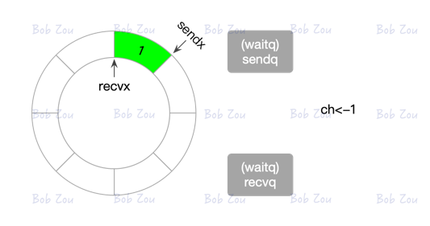
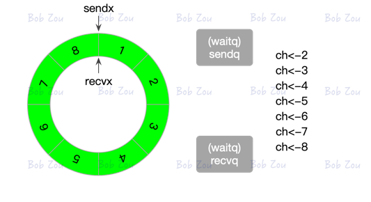
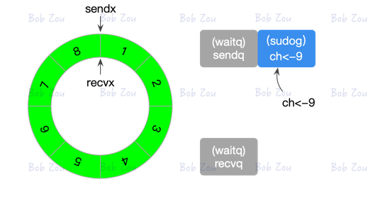
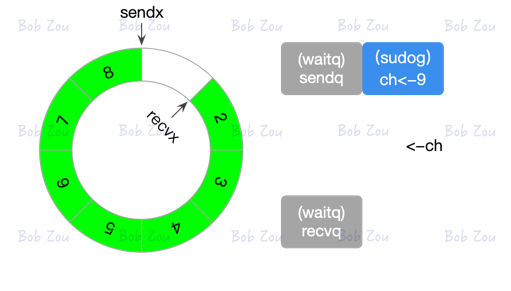
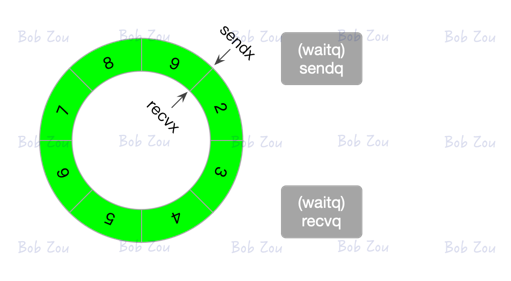
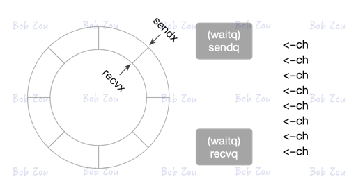
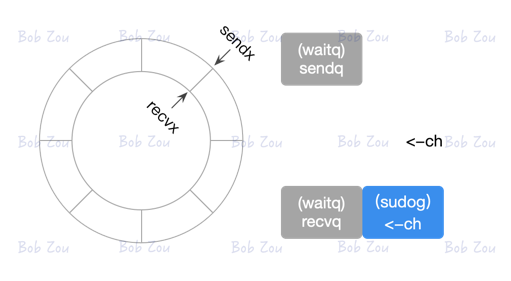

深入理解 Golang 中 Channel
十一月 26, 2021
一些废话
目前我们喜欢go，使用go进行后端开发，其实主要go的并发性实在太好了，而channel作为goroutine之间通信的工具也是非常的简单，高效且有趣。
什么是channel
- channel是并发安全的
- 用于存储在goroutine之间存储和传输数据
- FIFO
- 可以阻塞和唤醒goroutine
channel的底层数据结构
我们先直接从runtime/chan.go中查看channel的数据结构：
1 | type hchan struct { |
之后我们来分析一下各个字段存在的意义:
- 首先，我们定义channel的时候定义了channel的类型和长度，所以channel的结构里面必然会有一个表示元素类型和一段用于存储数据的内存
- 也就是上面的
elemtype *_type和buf unsafe.Pointer dataqsiz uint记录的队列的长度，elemsize uint16记录的类型的长度，有了长度和类型的长度，就能知道buf的大小- channel主要有读和写两个操作，读和写是独立的，所以需要记录从哪里读，从哪里写，也就是这里的
sendx uint和recvx uint
- 也就是上面的
- 我们可以用
len方法获取到channel中元素的数量，qcount uint就记录了这个值 - 当我们关闭一个channel时，如果channel里面还有元素，我们依旧可以读取，那就要需要标记位标记channel是否关闭，也就是
closed uint32 - channel需要被用于多协程之间通信，而channel本身优势并发安全的，所有channel中必要需要一个锁，也就是
lock mutex - 我们在使用channel的时候进程会应该channel没有空间或者没有内容而阻塞读写的协程，之后这些被柱塞的携程还需要被唤醒，而这些被阻塞的协程就被放在了
recvq waitq和sendq waitq
至此，channel的数据接口就介绍完了。
channel工作流程图解
下面都省略了请求锁和释放锁的过程
1. 我们先定义一个长度为8的channel

2. 向channel中发送一个元素

这时channel还是空的，发送的元素不会被阻塞
3. 不停的发送元素，直到channel被塞满

4. channel被塞满后，继续发送元素9

因为channel已经满了，所以元素9无法发送，发送的goroutine（就叫它G1吧）被阻塞，并放到了发送队列（类型为waitq，里面存放的是sudog）里
sudog结构体：
1 | type sudog struct { |
主要调度有GMP调度模型完成，主要就是将自己存为sudog，扔进队列，使用gopark标记waitting状态，唤醒的时候调用goready标记runnable，之后再被GMP调度。
5. 从channel中读取一个元素

6. 被读取一个元素后，队列就又有空间了，这是被阻塞的G1被唤醒，把 9 写入到队列中

7. 之后我们读取完所有的元素

8. 当channel中没有元素可以读了，读的goroutine就会被扔到recvq中

为什么channel在函数间传递时都不用传递指针？
应该make返回的ch就是一个指针了，channel实际的内存地址被分配到在堆中，我们获取到的是指想堆的地址。
接受者先阻塞 和 发送者先阻塞 channel处理的逻辑一样吗？
接受者先阻塞的时候，当发送者发送数据时，数据会被channel直接发送给接受者，剩下了将 数据拷贝到队列，再拷贝出来的时间，同时因为接受者已经拿到了数据，就不用在请求锁和释放锁。
查看评论